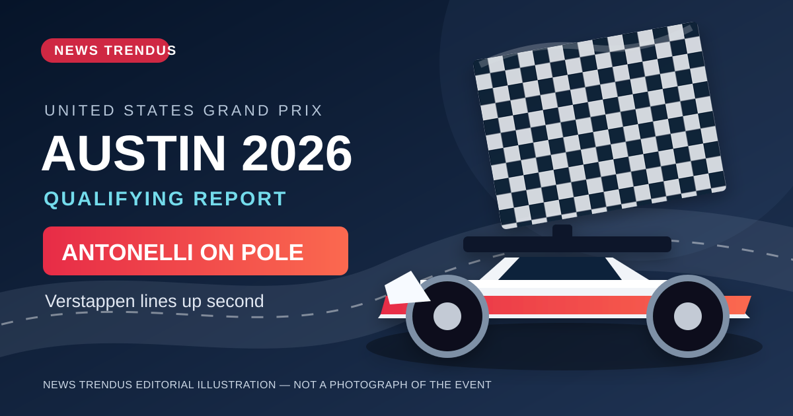

Sports · October 25, 2026
US Grand Prix 2026: Antonelli Takes Pole Ahead of Verstappen
A verified Austin qualifying recap, top-eight results, Sunday race time and championship stakes.
Read the explainer →NewsTrendus editorial explainers
Original explanatory articles based on attributed reporting and official data. We do not claim to conduct on-the-ground reporting. Visit the cited sources for original coverage and evolving updates.

A verified Austin qualifying recap, top-eight results, Sunday race time and championship stakes.
Read the explainer →